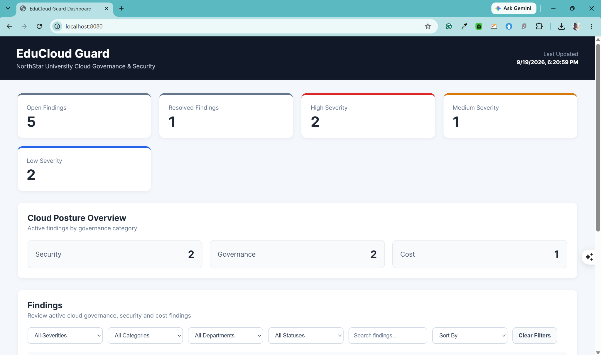
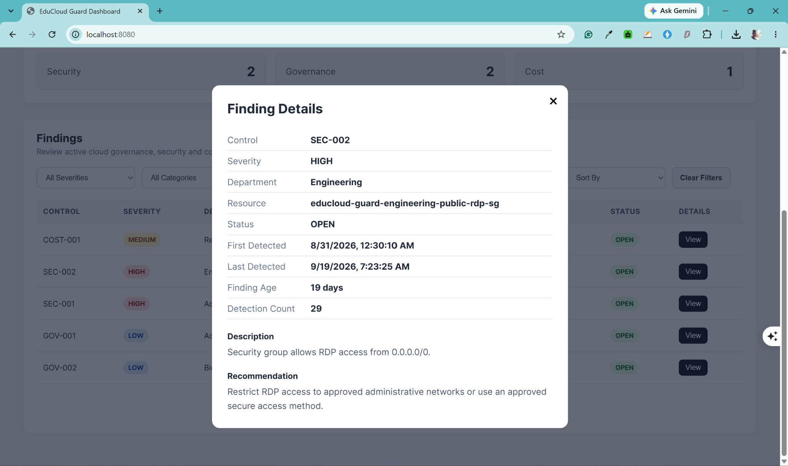

Completed project · Cloud governance
EduCloud Guard
AWS cloud governance, security, and cost monitoring
Overview
I built EduCloud Guard to automate cloud governance checks for NorthStar University, a simulated higher-education organization. The project brings resource governance, security findings, and potential cost waste into one central dashboard.
The solution combines a Python-based AWS Lambda scanner, DynamoDB finding storage, daily EventBridge scheduling, and SNS alerts. Terraform defines the supporting infrastructure, while an API gives the dashboard access to findings without exposing AWS credentials in the browser.
The problem
When university departments manage their own cloud resources, inconsistent tags, unapproved department assignments, exposed administrative ports, and unused storage can be difficult to track. Manual reviews make it harder to maintain a consistent view of governance and security across teams.
The outcome
EduCloud Guard turns these checks into repeatable scans and actionable findings. Administrators can review open and resolved issues, filter by department and severity, and inspect detection history and recommended remediation in one place.
Architecture

View full-resolution architecture
- Schedule: Amazon EventBridge invokes the scanner every 24 hours using
rate(1 day). - Evaluate: AWS Lambda runs separate Python modules for governance, security, and cost checks against selected AWS resources.
- Record: Amazon DynamoDB stores each finding and its detection history, status, and scan count.
- Alert: Amazon SNS sends notifications for high-severity security findings.
- Review: API Gateway and the Flask backend provide finding data to the web dashboard.
IAM permissions are scoped to the services required by the scanner. CloudWatch provides execution logs and operational visibility, while EC2 and EBS resources support controlled governance and cost-check validation.
Governance, security, and cost controls
- GOV-001 · Low: Detects missing governance tags: Department, Owner, Environment, Project, and CostCenter.
- GOV-002 · Low: Flags resources assigned to a department outside the approved university list.
- SEC-001 · High: Detects security groups exposing SSH on TCP port 22 to
0.0.0.0/0. - SEC-002 · High: Detects security groups exposing RDP on TCP port 3389 to
0.0.0.0/0. - COST-001 · Medium: Identifies unattached EBS volumes that may continue to incur unnecessary costs.
The approved departments in the simulated environment are ComputerScience, Engineering, Research, Admissions, and LearningTechnology.
Cloud posture dashboard
The dashboard summarizes open and resolved findings, severity levels, and security, governance, and cost categories. Administrators can filter by severity, category, department, or status, then search, sort, and page through results.

View full-resolution dashboard screenshot

Finding details and lifecycle
Each finding shows its affected resource, department, severity, status, detection history, description, and recommended remediation. Stable identifiers combine the control and resource, such as SEC-001#sg-xxxxxxxx, so repeat scans update an existing finding instead of creating duplicate records.


Demo video
Implementation and design decisions
- Serverless scanning: Lambda runs the checks when invoked, avoiding a continuously running scanner server.
- Modular controls: Governance, security, and cost scanners are separated so new checks can be added without combining all logic in one module.
- Repeatable infrastructure: Terraform makes the environment version controlled and easier to recreate, audit, or destroy after testing.
- Actionable history: First and last detection timestamps, scan counts, and status distinguish new, persistent, and resolved findings.
- Backend AWS access: AWS API requests stay in the backend; frontend JavaScript does not contain AWS credentials.
Skills demonstrated
AWS architecture, Lambda, DynamoDB, EventBridge, SNS, API Gateway, EC2, EBS, IAM, CloudWatch, Terraform, Python, Boto3, Linux, REST APIs, JavaScript, Git, and GitHub.
Project scope and future enhancements
This is a portfolio project built in a controlled AWS environment. Deliberately misconfigured test resources were used to validate the scanner; they are not production configurations.
Potential next steps include S3 and IAM controls, multi-account scanning with AWS Organizations, historical posture trends, automated remediation, dashboard authentication and role-based access, and a CI/CD deployment pipeline.